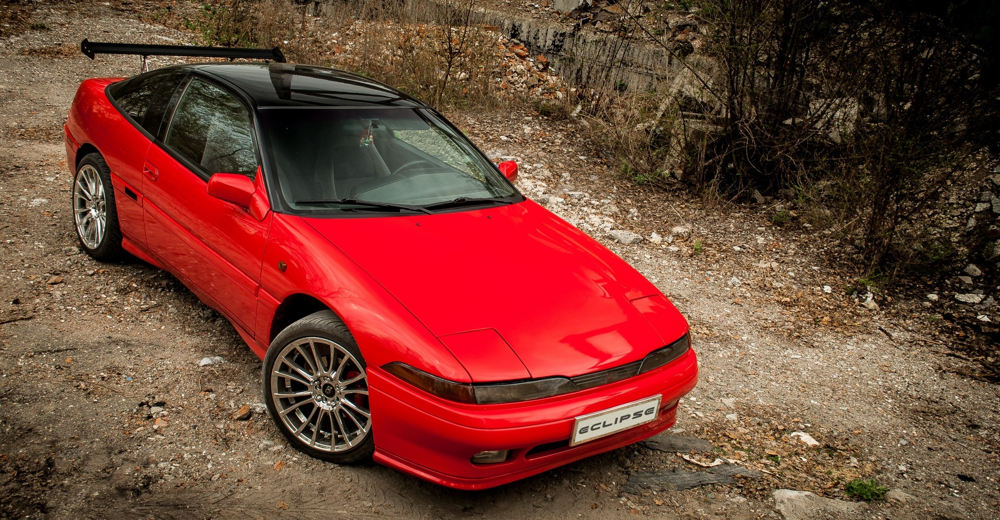
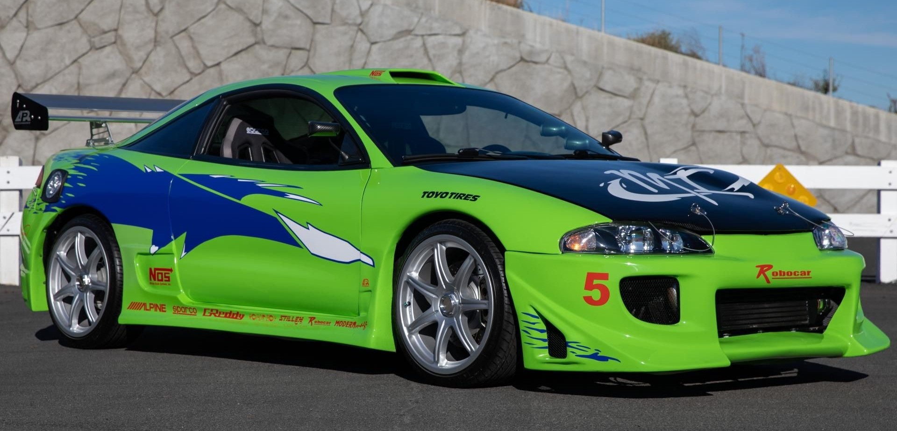
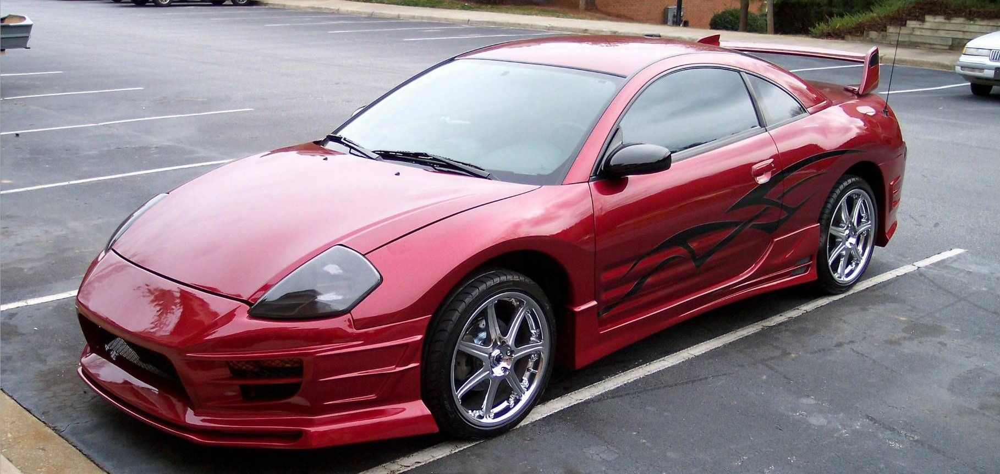

Mitsubishi Eclipse
Mitsubishi Eclipse — четырёхместное (2+2) спортивное купе. Выпускался с 1989 года по 2011 год, только в леворульном варианте. Назван в честь английской скаковой лошади XVIII века, выигравшей 26 забегов. В США также продавался под именами Eagle Talon и Plymouth Laser.
По состоянию на 2009 год Эклипс официально доступен в США, Канаде, Мексике, Японии, ОАЭ, Германии, Китае, Южной Корее, Филиппинах и Бразилии.
Было создано четыре поколения автомобиля:
с 1989 до 1994 — первое поколение (также выпускался под марками Eagle Talon и Plymouth Laser). Тюнинг:
с 1995 до 1999 — второе поколение (также выпускался под маркой Eagle Talon). Тюнинг:
с 2000 до 2005 — третье поколение. Тюнинг:
